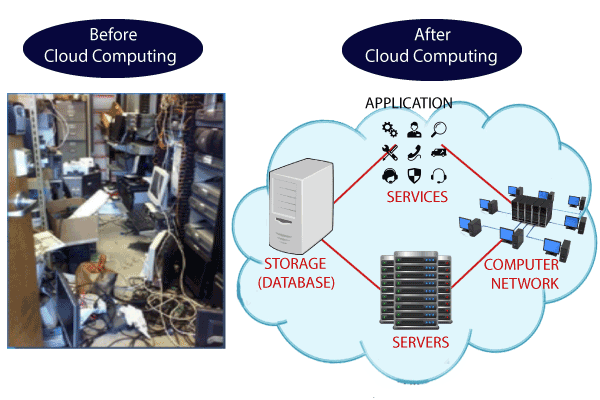
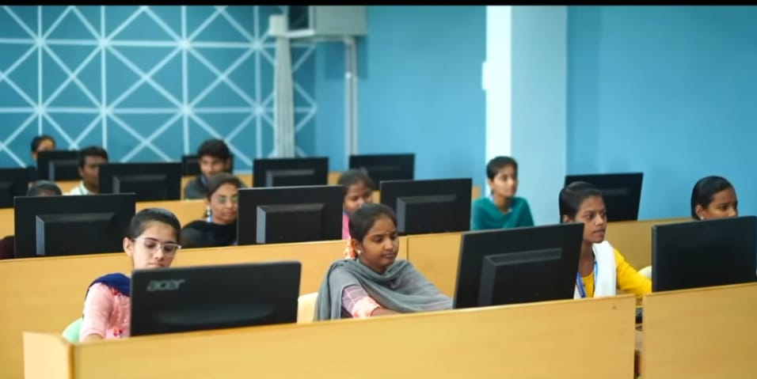
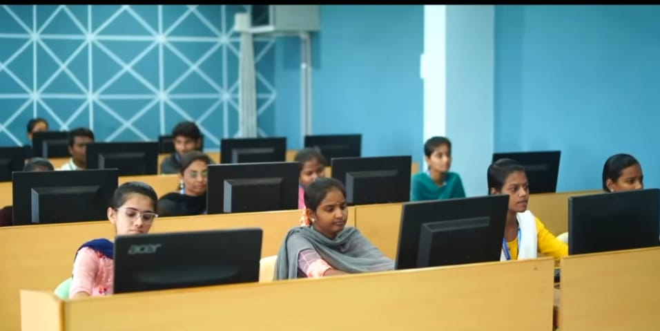

SVREC Technologies
SVREC TechnologiesCloud Computing Tutorial
Cloud Computing tutorial provides basic and advanced concepts of Cloud Computing. Our Cloud Computing tutorial is designed for beginners and professionals.
Cloud computing is a virtualization-based technology that allows us to create, configure, and customize applications via an internet connection. The cloud technology includes a development platform, hard disk, software application, and database.
What is Cloud Computing ?
The term cloud refers to a network or the internet. It is a technology that uses remote servers on the internet to store, manage, and access data online rather than local drives. The data can be anything such as files, images, documents, audio, video, and more.
There are the following operations that we can do using cloud computing:
Developing new applications and services
Storage, back up, and recovery of data
Hosting blogs and websites
Delivery of software on demand
Analysis of data
Streaming videos and audios
Why Cloud Computing?
Small as well as large IT companies, follow the traditional methods to provide the IT infrastructure. That means for any IT company, we need a Server Room that is the basic need of IT companies.
In that server room, there should be a database server, mail server, networking, firewalls, routers, modem, switches, QPS (Query Per Second means how much queries or load will be handled by the server), configurable system, high net speed, and the maintenance engineers.
To establish such IT infrastructure, we need to spend lots of money. To overcome all these problems and to reduce the IT infrastructure cost, Cloud Computing comes into existence.
Characteristics of Cloud Computing
The characteristics of cloud computing are given below:
1) Agility
The cloud works in a distributed computing environment. It shares resources among users and works very fast.
2) High availability and reliability
The availability of servers is high and more reliable because the chances of infrastructure failure are minimum.
3) High Scalability
Cloud offers "on-demand" provisioning of resources on a large scale, without having engineers for peak loads.
4) Multi-Sharing
With the help of cloud computing, multiple users and applications can work more efficiently with cost reductions by sharing common infrastructure.
5) Device and Location Independence
Cloud computing enables the users to access systems using a web browser regardless of their location or what device they use e.g. PC, mobile phone, etc. As infrastructure is off-site (typically provided by a third-party) and accessed via the Internet, users can connect from anywhere.
6) Maintenance
Maintenance of cloud computing applications is easier, since they do not need to be installed on each user's computer and can be accessed from different places. So, it reduces the cost also.
7) Low Cost
By using cloud computing, the cost will be reduced because to take the services of cloud computing, IT company need not to set its own infrastructure and pay-as-per usage of resources.
Prerequisite
Before learning cloud computing, you must have the basic knowledge of computer fundamentals.
Audience
Our cloud computing is designed to help beginners and professionals.
Problem
We assure that you will not find any difficulty while learning our cloud computing tutorial. But if there is any mistake in this tutorial, kindly post the problem or error in the contact form.


 
